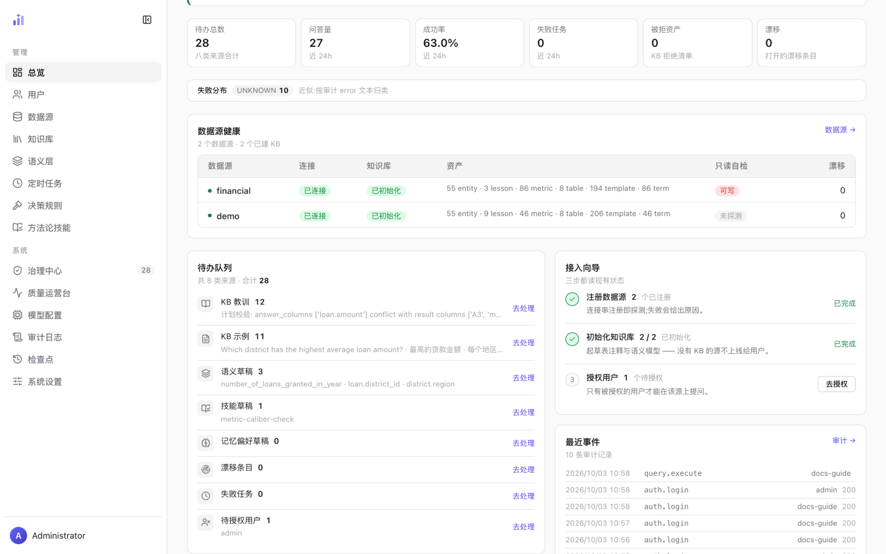

一屏怎么读
 1
2
3
4
5
6
7
1
2
3
4
5
6
7
- 1健康横幅——全平台一句话结论（全部可达 / 有源不可达 / 探测未完成），附带存储、当前模型、数据源可达数、只读自检结果。判定直接来自
/v1/health，与探针口径一致。 - 2KPI 行——待办总数 / 问答量 / 成功率 / 失败任务 / 被拒资产 / 漂移。每个数字都可点：待办滚到本页待办队列，问答量与成功率进质量运营台，失败任务进任务页的错误过滤，被拒资产进知识库资产页，漂移进数据源页。
- 3失败分布——近窗口内的失败按类别归类（如 UNKNOWN）。注意标注「近似：按审计 error 文本归类」——它是启发式统计，不是精确分类。
- 4数据源健康表——每个数据源的连接、KB 初始化、资产构成（entity / lesson / metric / table / template / term）、只读自检、打开的漂移条目。「只读自检」验的是连接是否真的不可写——可写会标红提示。
- 5待办队列——八类来源的待处理合计，逐项可跳（见下一节）。
- 6接入向导——注册数据源 → 初始化知识库 → 授权用户，三步各自读现有状态，未完成的给出直达按钮。
- 7时间窗口与刷新——
24h / 7d / 30d切换统计窗口（问答量、成功率、失败分布随之变化），刷新按钮重新聚合。窗口切换会带进 KPI 的跳转链接，明细页看到的是同一个窗口。
每个数字都带出处；取不到就说取不到
这一页是纯聚合视图，所有块从一个端点取数（GET /v1/admin/overview）。
两条披露纪律值得注意：块级降级——某个块取数失败会显示该块的失败卡片与原因，
不会用 0 冒充；计数到顶会标注——扫描样本触顶时显示「到顶」或「样本到顶，计数为下界」，
精确计数与下界计数不混为一谈。
待办队列：八类来源，一个入口
队列把散在各页的待处理事项聚成一处，这样「今天该做什么」不用翻六个页面。 八类来源：KB 教训、KB 示例、语义草稿、技能草稿、 记忆偏好草稿、漂移条目、失败任务、待授权用户。

1 2 3 4- 1队列汇总——「共 8 类来源 · 合计 N」。数量为 0 的类目也在列（图中记忆偏好草稿、漂移条目等），0 是信息：它说明这一类当前干净。
- 2去处理——跳到该类目的落地页。无落地页的类目（如「未装配」的子系统）会如实标注，而不是给一个点不动的按钮。
- 3接入向导——新数据源上线的三步检查单，读的是现有状态而非流程进度：注册了几个、初始化了几个、还有几个用户待授权。
- 4最近事件——最近 10 条审计记录（登录、执行等），点「审计 →」进完整审计页。
建议的日常节奏
-
1
上班第一眼：横幅 + KPI
横幅不是绿色或成功率明显下跌，先处理健康问题再看别的—— 后面所有数字的可信度都建立在数据源可达的前提上。
- 2
-
3
抽查最近事件
队列全绿时可从「最近事件」随机点开几条，看有没有不该出现的动作—— 审计页的完整过滤在审计日志。
相关页面
本页截图为真实界面（隔离的演示实例，数据是内置 BIRD 金融演示库）；
可用前端仓库里的 npm run shots 重新生成，_manifest.json 记录每张图的来源提交。